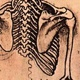

| air | bane | biff | bins | dye | echo | ell | gage | hest | hoover | limn | mite | moss | nrrd | ten | unrrdu |
News:
|
| air : Core utilities and macros | 
| hest : Command-line parsing | biff : Error message collection | ||

| ell : Linear algebra functions and macros. | 
| nrrd : N-dimensional image processing | 
| unrrdu : Command-line utilities based on nrrd |

| dye : Color representation and conversion | moss : Geometric transforms and sampling of images | 
| gage : Filtered point-sampling in volumes | |

| bane : Re-Implementation of my MS thesis (and VolVis98 paper) |  | limn : Graphics and drawing | hoover : Simple volume rendering framework. | |

| mite : Simple scalar volume renderer | echo : Ray-tracer | 
| ten : Diffusion tensor analysis and visualization |
Information about the command-line tools:

bins : qbert, mrender, vprobe, and others.